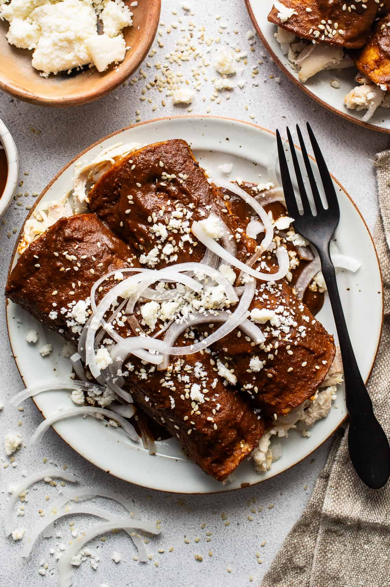

Enmoladas

Description
Enmoladas are a traditional Mexican dish. Rich and complex in flavor, enmoladas are best known for the mole
sauce, which is a blend of various chili peppers, spices, and chocolate.
Ingredients
- 2 cups of chicken, roasted and shredded
- 1/2 cup of Mexican Crema
- 1 cup of shredded mozzarella cheese
- 1/2 cup of thinly sliced onion
- 4 cups of chicken stock
- 4 tsp. of brown sugar
- 1 cup of mole sauce
- 8 corn tortillas
- 1/4 cup of toasted pepitas
- 1/4 cup of crumbled queso fresco
- 1/4 cup of thinly sliced onion
Steps
- Pour the chicken stock into a wide pan and bring to a boil.
- Add the mole sauce and chocolate triangles. Stir. When the sauce and chocolate are fully dissolved in the stock, turn heat to medium low.
- One by one, submerge the tortillas into the piping-hot mole rojo. Place each tortilla on a plate, open, and spoon 2 to 3 Tbsps shredded chicken into its center.
- Over the chicken, sprinkle 1 to 2 Tbsps shredded chicken into its center.
- Over the chicken, sprinkle 1 to 2 Tbps of mozzarella cheese, 1 tsp. of cream, and 1 to 2 Tbsps of the sliced onions.
- Fold each tortilla into a thin roll (like a taquito) and garnish with a sprinkling of queso fresco, onion slivers, crema, and toasted pepitas.